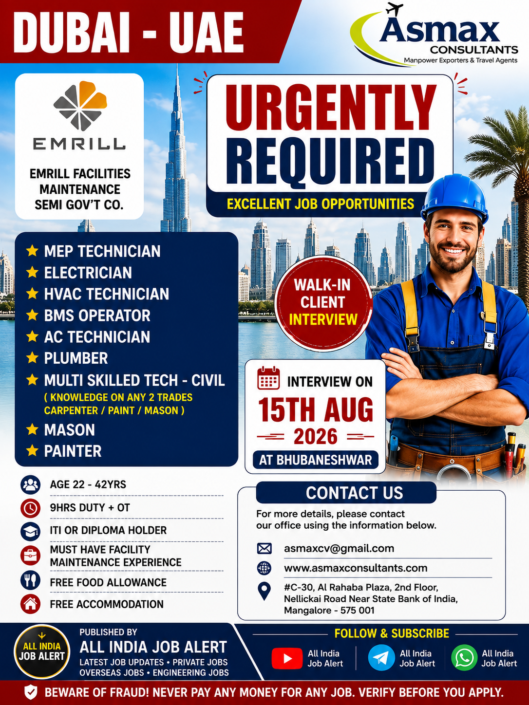

Recruitment: Dubai, UAE Jobs 2026
Recruitment Agency: Asmax Consultants
Client: EMRILL Facilities Maintenance Semi Govt's Co.
Job Type: Full Time
Age Limit: 22–42 Years
Duty: 9 Hours + Overtime
Qualification: ITI or Diploma Holder
Experience: Facility Maintenance Experience Required
Interview: Client Interview on 15th August 2026
Interview Location: Bhubaneswar, Odisha
Asmax Consultants has shared an overseas recruitment opportunity for candidates interested in facility maintenance and technical jobs in Dubai, United Arab Emirates. According to the recruitment poster, EMRILL Facilities Maintenance Semi Govt's Co. is looking for experienced technical and maintenance professionals for multiple positions.
The recruitment includes opportunities for MEP Technicians, Electricians, HVAC Technicians, BMS Operators, AC Technicians, Plumbers, Multi Skilled Technicians, Masons and Painters. Candidates with relevant technical qualifications and facility maintenance experience can check the requirements carefully before applying or attending the client interview.
This opportunity may be suitable for candidates who have practical experience in building maintenance, MEP services, electrical work, HVAC systems, plumbing, civil maintenance, carpentry, painting, masonry or other related facility-management activities.
| Position | Requirement |
|---|---|
| MEP Technician | Facility Maintenance Experience |
| Electrician | Facility Maintenance Experience |
| HVAC Technician | Facility Maintenance Experience |
| BMS Operator | Facility Maintenance Experience |
| AC Technician | Facility Maintenance Experience |
| Plumber | Facility Maintenance Experience |
| Multi Skilled Technician – Civil | Knowledge of Any 2 Trades |
| Mason | Relevant Experience |
| Painter | Relevant Experience |
The MEP Technician position is suitable for candidates with practical experience in mechanical, electrical and plumbing maintenance activities. MEP technicians may be required to inspect, maintain and troubleshoot building services and equipment. Candidates should have practical knowledge of facility maintenance and should be comfortable working at commercial or large building sites.
Applicants should carry their updated resume and relevant qualification or experience documents when attending the recruitment process. Technical knowledge, maintenance experience and the ability to follow safety procedures can be important for this type of role.
Electricians are responsible for electrical maintenance and related technical activities. Depending on the assigned facility, duties may include inspection, troubleshooting, preventive maintenance and repair of electrical systems and equipment.
Candidates should have appropriate technical knowledge and practical maintenance experience. Applicants should verify the exact job responsibilities and employment conditions with the recruitment representative before accepting an offer.
The HVAC Technician position is intended for candidates experienced in heating, ventilation and air-conditioning maintenance. HVAC technicians may be responsible for inspecting equipment, carrying out preventive maintenance and identifying technical problems.
Candidates with practical facility maintenance experience and knowledge of HVAC systems can consider this opportunity. Relevant technical certificates or ITI qualifications should be kept ready for verification.
BMS Operators generally monitor and operate building management systems used to control and monitor building services. The position can involve monitoring system conditions, responding to alarms, coordinating maintenance teams and recording operational information.
Candidates with relevant building-management or facility-maintenance experience may be suitable for this position. Applicants should confirm the specific software, systems and duties required by the employer.
AC Technicians are generally involved in installation support, inspection, preventive maintenance and troubleshooting of air-conditioning systems. Practical experience in facility maintenance can be useful for this position.
Applicants should have sufficient technical knowledge to identify common AC-related problems and perform maintenance work safely. Candidates should also follow all workplace safety procedures.
The Plumber position is suitable for candidates with practical plumbing and facility-maintenance experience. Responsibilities may include maintenance of water-supply lines, drainage systems, sanitary fixtures, pumps and other plumbing-related equipment used in buildings.
Candidates should have hands-on experience in building maintenance and should be able to identify and resolve common plumbing problems. Experience in commercial or large residential facilities can be useful.
The Multi Skilled Technician – Civil position is intended for candidates who have knowledge of at least two trades. The recruitment poster specifically mentions knowledge of any two trades such as carpenter, paint or mason.
Multi-skilled technicians can be required to support different maintenance activities depending on the needs of the facility. Candidates should clearly mention their trade skills and previous maintenance experience in their resume.
Masons may be involved in civil maintenance activities such as masonry repairs, block work, plastering and other building-related maintenance tasks. Candidates should have practical experience and be able to perform assigned work according to site requirements.
Painters may be responsible for painting, surface preparation, touch-up work and other related maintenance activities. Candidates with experience in building or facility maintenance can apply if they meet the employer's requirements.
According to the recruitment poster, candidates should be ITI or Diploma holders and must have facility maintenance experience. The exact technical qualification may depend on the position being applied for.
Candidates should make sure their resume clearly mentions their educational qualification, total work experience, current or previous employer, technical skills and the position they are applying for. Applicants should carry original documents and copies where required for verification.
The recruitment poster states an age range of 22 to 42 years. Candidates should confirm their eligibility with the recruitment agency before travelling for the interview.
The poster mentions 9 hours duty plus overtime. The actual working schedule, overtime calculation, weekly off and other employment conditions should be confirmed directly with the recruitment representative.
The recruitment poster mentions free food allowance and free accommodation. Candidates should confirm the exact terms, eligibility, value of the allowance and accommodation arrangements directly with the recruiter before accepting the offer.
Interview Date: 15th August 2026
Interview Location: Bhubaneswar, Odisha
Interview Type: Client Interview
Candidates interested in the opportunity should contact the recruitment representative in advance and confirm the interview venue, reporting time, required documents and position availability.
Phone 1:
+91 8548906717
Phone 2:
+91 8244273717
Email:
asmaxcv@gmail.com
Website:
www.asmaxconsultants.com
Office Address:
#C-30, Al Rahaba Plaza, 2nd Floor,
Nellickai Road Near State Bank of India,
Mangalore – 575 001
Candidates should prepare an updated resume before attending the client interview. The resume should clearly mention the candidate's technical qualification, total experience, previous employers, job responsibilities, technical skills and contact information.
Candidates should also prepare to explain their previous facility-maintenance experience. For technical positions, applicants may be asked questions about troubleshooting, preventive maintenance, safety procedures, equipment handling and practical site work.
It is recommended that candidates contact the recruitment representative before travelling to confirm the exact interview venue and reporting instructions. Candidates should also verify the position, salary, benefits, employment contract and other conditions before accepting an overseas job offer.
Dubai has a large facility-management and building-maintenance sector, creating opportunities for experienced technical professionals. Candidates with practical experience in MEP, electrical, HVAC, plumbing, BMS and civil maintenance can explore suitable roles according to their skills.
The advertised recruitment also mentions food allowance and accommodation, which may be useful benefits for selected candidates. However, candidates should independently confirm all benefits and employment terms with the authorized recruitment representative.
Candidates should verify recruitment details before sharing personal documents or making any payment. Never pay money to an unknown person simply because they promise guaranteed selection or a job.
Before travelling for an interview, confirm the interview venue, employer details, job position, salary, accommodation, food allowance, visa arrangements and other employment conditions directly with the recruitment agency.
This website is publishing recruitment information based on the supplied job poster for informational purposes. Candidates should independently verify the latest information with the recruiter before proceeding.
For more private jobs, construction jobs, overseas jobs, engineering jobs, supervisor jobs, technician jobs and other recruitment updates, visit All India Job Alert regularly.
🏠 Back to Job Updates